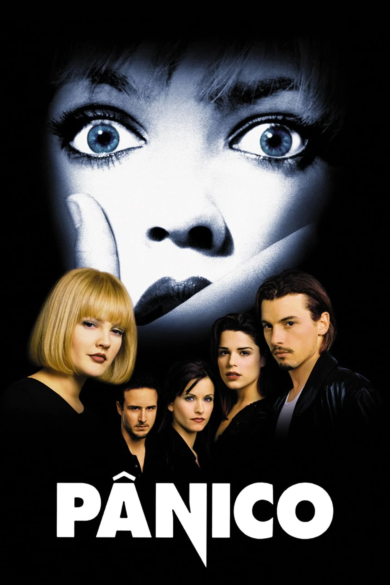

Pânico (1996)

Sinopse: Um ano após o assassinato brutal de sua mãe, a adolescente Sidney Prescott e seus amigos tornam-se alvo de um assassino mascarado conhecido como Ghostface. Com um conhecimento obsessivo por filmes de terror, o Ghostface desafia suas vítimas com charadas e jogos mortais, transformando a cidade de Woodsboro em um cenário de terror real e cheia de reviravoltas.
Diretor: Wes Craven
Elenco Principal: Neve Campbell (Sidney Prescott), Courteney Cox (Gale Weathers), David Arquette (Dewey Riley), Skeet Ulrich (Billy Loomis), Matthew Lillard (Stu Macher), Rose McGowan (Tatum Riley), Drew Barrymore (Casey Becker).
Bilheteria Mundial: Aproximadamente US$173 milhões
Curiosidades:
- Revitalizou o gênero slasher nos anos 90 com sua abordagem metalinguística, que satiriza e subverte os clichês dos filmes de terror.
- A cena de abertura, com Drew Barrymore, é uma das mais chocantes e memoráveis da história do cinema de terror.
- O roteiro, escrito por Kevin Williamson, é conhecido por seus diálogos inteligentes e referências a outros filmes do gênero.
- O assassino Ghostface se tornou um dos vilões mais icônicos do cinema, com sua máscara inspirada em "O Grito" de Edvard Munch.
- O sucesso do filme gerou uma franquia de várias sequências e uma série de televisão.